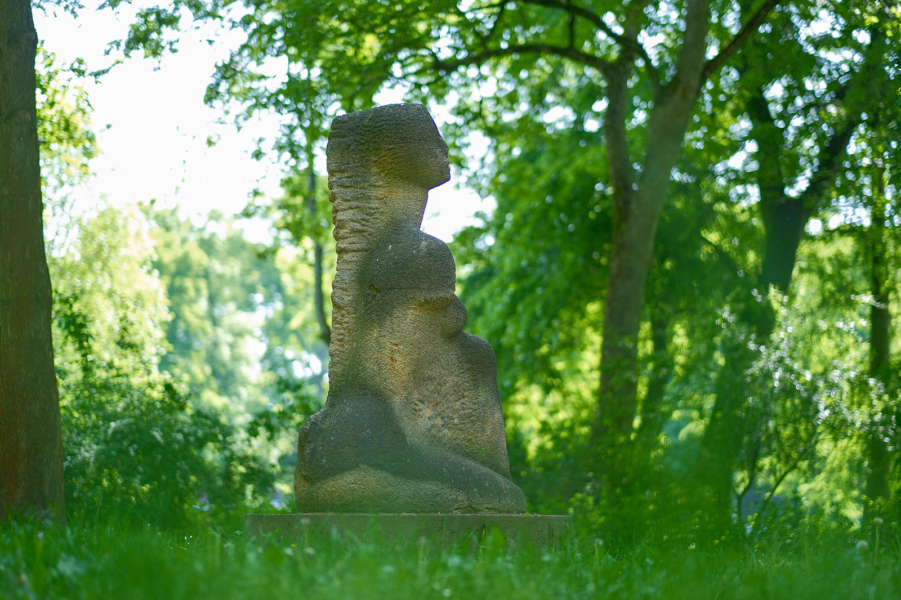
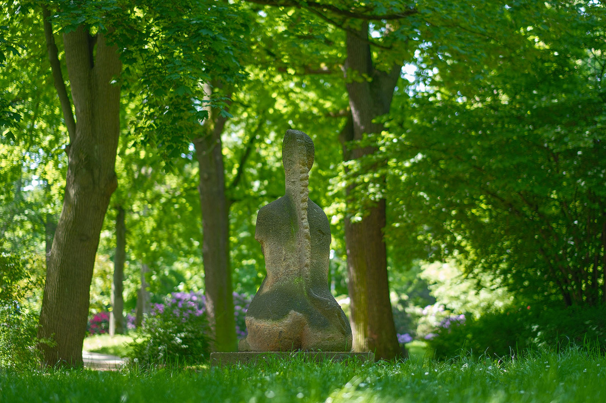
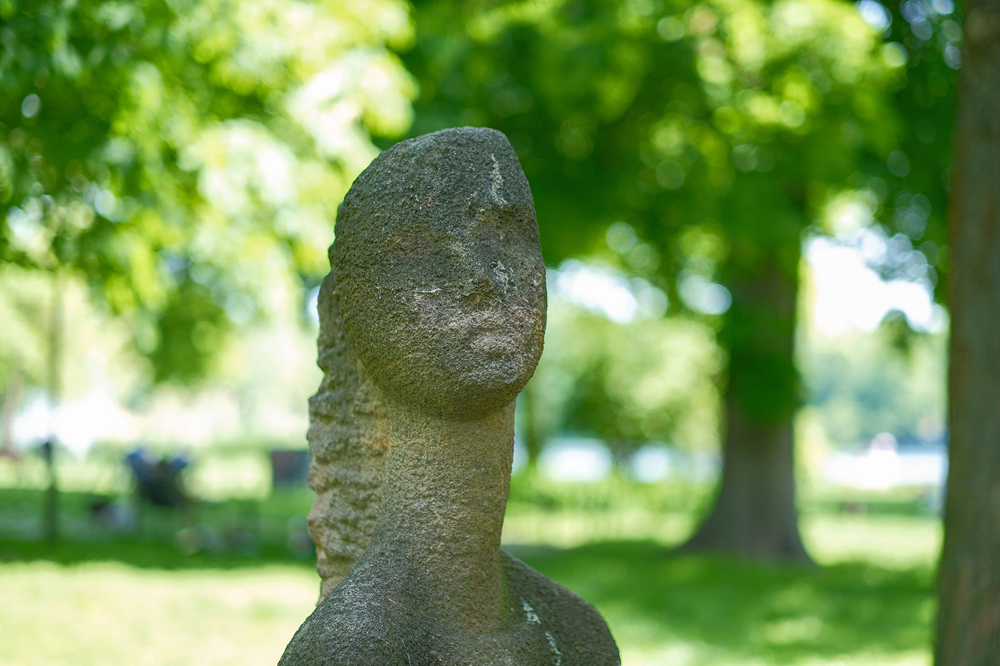
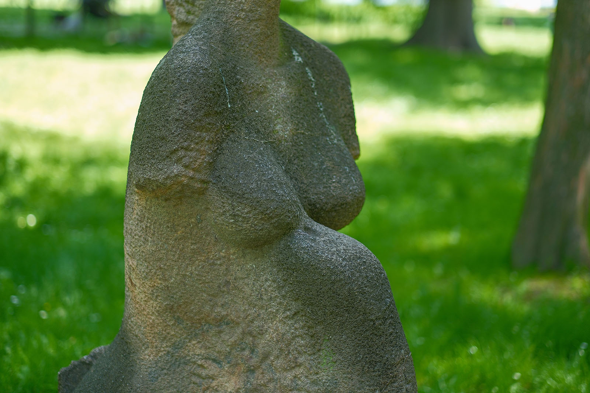
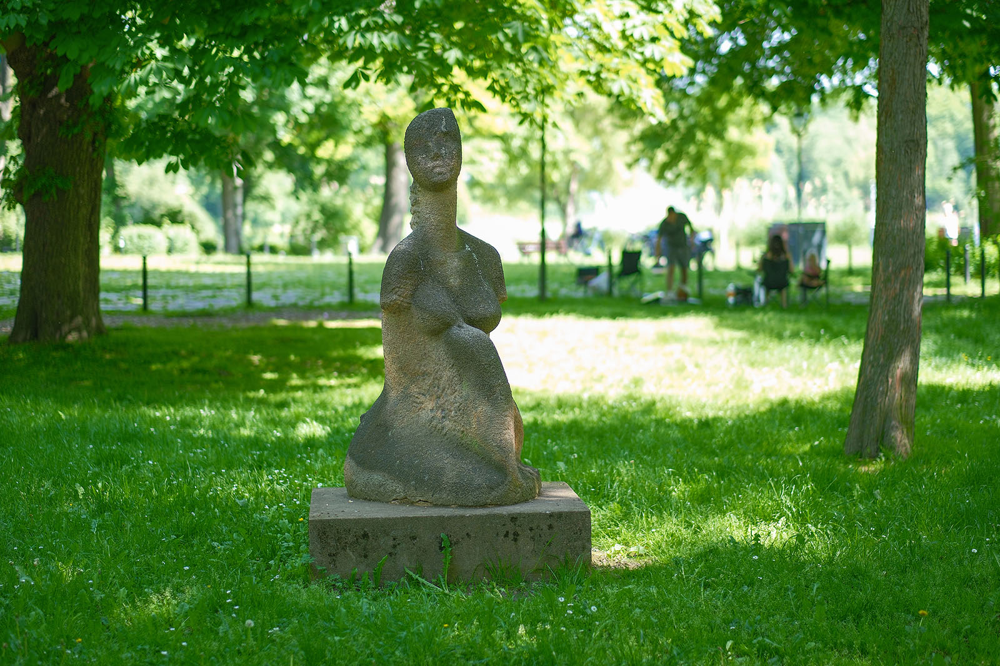

Recherche und Werkbeschreibung: Roman Pilz. Text und Fotografien wechseln sich wie in einem Magazin ab. Ein Klick auf ein Bild öffnet die Großansicht.
Ljubljana ist eine der ältesten Partnerstädte von Chemnitz. Fünf Jahre nach Tampere (Finnland), im Oktober 1966, wurde mit der Stadt, die seit 1991 Hauptstadt der unabhängigen Slowakei ist, ein Vertrag über internationale Zusammenarbeit und Austausch beschlossen.
Ein wichtiger Teil dieser Zusammenarbeit bildet die Kultur – so kam der slowenische Maler und Bildhauer Mik Simčič wohl im Rahmen dieser Kooperation 1988 erstmals nach Karl-Marx-Stadt: Vom 08.11. bis 11.12.88 hatte er in den Städtischen Kunstsammlungen eine Personalausstellung mit dem Titel "Die Frau". Die Darstellung der weiblichen Figur wurde seit dem Studienaufenthalt von Simčič in Verona (Italien) zu einem der Hauptmotive seiner Zeichnungen, Malereien und Bildhauerarbeiten.
Mik (Neven) Simčič wurde um 1960 in Ljubljana, Slowenien, geboren. Simčič studierte an der Universität in Ljubljana sowohl an der Akademie für Bildhauerei und Malerei als auch an der Akademie für Film, Fernsehen und Theater und machte dort im Jahr 1982 in beiden Bereichen ein Diplom. Anschließend absolvierte er seinen Militärdienst bei der Jugoslawischen Volksarmee, während dessen er bereits als Bildhauer arbeiten konnte.
Der Künstler arbeitet seit 1982 als Bühnenbildner, Bildhauer und Maler. Seine künstlerischen Vorbilder sind die Künstler der italienischen Renaissance, insbesondere Michelangelo. Simčič erhielt 2019 internationale Aufmerksamkeit für seine von Papst Franziskus autorisierte und während einer Audienz vorgestellte Porträtbüste in Marmor.
Für das höchste Gebäude Sloweniens, den Crystal Palace in Ljubljana, schuf er die monumentale Skulptur „Die Entführung der Europa“ aus Stein, Glas und Bronze. Der Künstler lebt und arbeitet in Ljubljana. Seine Arbeiten werden regelmäßig in Slowenien ausgestellt.
Im Ausland war er schon in Rom, Zagreb, Wien, New York, London und Paris zu sehen. 1990, im Jahr der deutschen Wiedervereinigung, brachte ihn ein Künstleraustausch in die deutsche Partnerstadt von Ljubljana, Chemnitz.
Anlässlich eines sich kurz darauf anschließenden Künstleraufenthalts in Chemnitz, der in der unmittelbaren Wendezeit von 1989 bis 1990 erfolgte, schuf der Bildhauer die Skulptur "Christina" – als Symbol der internationalen Städtefreundschaft. Der Künstler erinnert sich, dass sich während der Schaffenszeit der Fall der Mauer in Berlin ereignete und dass die Einweihung der Skulptur an ihrem Aufstellungsort auf dem Schlossteich im bereits wiedervereinigten Deutschland erfolgte.
Der Künstler bearbeitete für die leicht überlebensgroße, weibliche Sitzfigur einen großen Block aus rötlichem, wohl aus Rochlitz stammendem Porphyrtuff. Zunächst mit dem Presslufthammer und anschließend mit Hammer und Meißel arbeitete der Künstler Stück für Stück die weibliche Gestalt aus dem Stein. Die Figur ist bewusst fragmentarisch, als Torso gearbeitet.

Der Kopf und der Oberkörper der hockenden, an eine Sphinx erinnernden Figur sind feiner bearbeitet und geglättet. Das lange, als Zopf über den Rücken gebundene Haar ist im Gegensatz viel gröber gehauen und zeigt noch sichtbare Meißelspuren. Die eng an den Körper und das runde Gesäß gezogenen Beine bilden die Basis der Figur, deren gedachte Formen aber weitestgehend im Stein und im Betonsockel verborgen zu bleiben scheinen – die Arme dagegen fehlen ganz und „brechen“ direkt an den Schultern ab.
Besonders auffallend ist der schlanke, langgezogene Hals der Aktdarstellung. Über dem zwischen den runden Brüsten aufgestellten linken Knie der Hockenden ragt ihr Kopf, leicht nach rechts geneigt, in die Höhe. Augen, Nase und Mund sind nur sanft angedeutet und verlieren sich mit der natürlichen Verwitterung des Natursteins immer mehr. Perspektive und Proportionen der Figur sind ein wenig in ihren Volumen und Formen verschoben und lassen an Vorbilder der Klassischen Moderne wie Brancusi oder Modigliani denken, deren bildhauerisches Werk nur maßvoll vom Kubismus beeinflusst wurde.

Der slowenische Bildhauer bedachte die Figur am wahrscheinlichsten nach einer Muse oder seinem (imaginären) Modell mit dem Namen "Christina" (Kristina). Denkar ist auch eine weibliche Figur aus dem Schatz antiker Mythen und der christlichen Kunst, da der Künstler sich regelmäßig von diesen Motiven inspirieren lässt. So schuf er in jüngerer Zeit beispielsweise in Bewunderung von Botticellis Venus eine Marmorskulptur nach dessen Gemälde.

